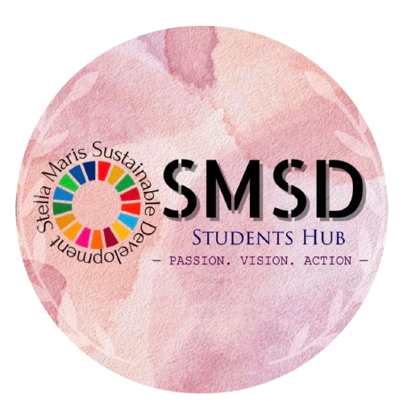

6 Events | 1 Idea | 1 Prototype
6 Events | 1 Idea | 1 Prototype
The Stella Maris Sustainable Development (SMSD) Student’s Hub, launched in 2022 by the Department of Economics of Stella Maris College, helps students to transform theoretical knowledge into actionable insights. SMSD is a student driven programme and a member of the Sustainable Development Solutions Network (SDSN) - a global initiative for the United Nations.
This event will be the official inauguration of the competition. The first workshop comprises of sessions on Design Thinking and Marketing with AI to educate students on how to create, present and market their pitches effectively.
This workshop will guide participants, particularly arts students, on formulating effective policies and creating data sets. This session will emphasize integrating data-driven insights into scalable policy recommendations, enhancing the impact of solutions.
Round 1 would include two elements - a pitch presentation and marketing using AI. Participants must propose their pitches and sell their ideas using AI-driven marketing strategies. The best pitches of this event will move on to round 2.
The teams selected from round 1 will then be offered a workshop on rapid prototyping using different available tools. This workshop would also act as a platform for them to clarify doubts and seek guidance in their prototyping journey.
This would be the final round, where the participants present their project prototype. These will then be evaluated based on their scalability, feasibility and market value to the winners. Winners will receive exciting cash prizes and exclusive opportunities.
Winners will present their ideas in a winner’s showcase. This would also involve post-competition steps like connecting them with potential investors or collaborating with SMC’s incubation cell to practically implement the prototype and increase its scale.
Participants will develop and present scalable prototypes, which can include physical models, research proposals, or policy recommendations
The event is committed to providing an unbiased platform where prototypes from all different academic disciplines are equally valued creating a medium for students from both the arts and the sciences to showcase their solutions
Another key element of the event includes workshops on prototype development, mentorship and guidance resources for participants as well as technical experts on the judging panel - to create a growth-maximising environment for participating students
Participants will develop and present scalable prototypes, which can include physical models, research proposals, or policy recommendations which will then be scaled beyond competition.